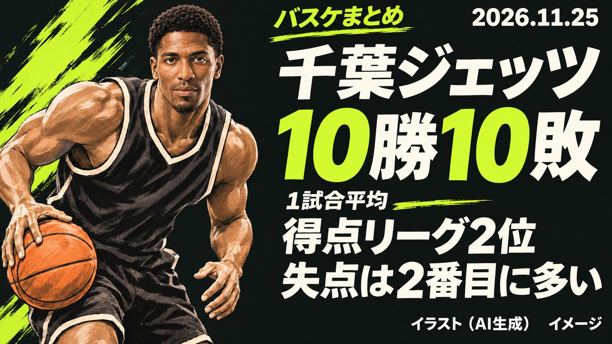

千葉ジェッツ10勝10敗、得点はリーグ2位でも失点が2番目に多い

千葉ジェッツは20試合を終えて10勝10敗です。1試合平均の得点はリーグ2位ですが、失点は2番目に多くなっています。
この記事では、公式の順位表から攻守の数字を読み解きます。24日に発表されたエルジー・ギル選手の契約解除も、あわせて整理します。
【事実】千葉Jは10勝10敗で東地区7位
千葉ジェッツは、B.PREMIER東地区の7位です。20試合を終えて10勝10敗です。
総得点は1852点で、総失点は1906点です。得失点差は-54になっています。
【分析】得点は2位、失点は2番目に多い
順位表の総得点と総失点を、試合数で割って比べます。26チームの中で、千葉Jの位置は次のとおりです。
| チーム | 試合数 | 1試合平均得点 | 1試合平均失点 |
|---|---|---|---|
| レバンガ北海道 | 18 | 95.8 | 93.4 |
| 千葉ジェッツ | 20 | 92.6 | 95.3 |
| アルバルク東京 | 20 | 92.3 | 81.8 |
| 佐賀バルーナーズ | 17 | 77.9 | 95.7 |
得点は北海道の95.8に次ぐ2位で、92.6です。失点は佐賀の95.7に次いで2番目に多い95.3です。
東地区で見ると、失点は13チームの中で最も多くなっています。
同じ東の強豪と比べると、差がはっきりします。A東京は得点が92.3で、失点は81.8です。
得点力はA東京と同じ水準にあります。差がつくのは守備で、1試合あたり約13点の開きがあります。
【分析】勝率5割は「打ち合い」の結果
1試合平均の得失点差は、千葉Jが-2.7です。得点が多いのに、失点がそれを上回っています。
10月31日の富山戦は、100失点で敗れました。守備の課題は、シーズン序盤から続いていると見ます。
得点を伸ばすことより、失点を減らすほうが勝率は上がりやすいと考えます。失点を90点以下に抑える試合が増えるかが、再開後の焦点です。
【事実】ギル選手が契約解除、自由交渉リストに公示
千葉Jは11月24日、エルジー・ギル選手との契約を双方合意で解除しました。ギル選手は同日15時に、自由交渉リストに公示されています。
ギル選手は203cmのパワーフォワードです。
千葉Jでは12試合に出場しました。平均19分36秒で5.8得点、3.7リバウンドです。
10月にマット・コステロ選手のインジュアリーリスト入りで緊急加入し、先発を務めていました。11月13日には再契約を結んでいました。
【分析】再開後はインサイドの層が焦点になる
11月9日には、ネイト・ウィリアムズ選手が右肩関節不安定症で1〜2カ月の離脱と報じられました。ギル選手の退団で、インサイドの選手層は一段と薄くなったと見ます。
守備の立て直しには、リング周りを守る選手の出場時間が欠かせません。どの選手が穴を埋めるかが、後半戦の見どころです。
千葉Jの次の試合は、12月5日の茨城戦です。茨城は1試合平均の失点が76.6で、リーグで2番目に少ないチームです。
千葉Jの攻撃力が、堅い守備にどこまで通じるか。再開初戦は、その試金石になります。